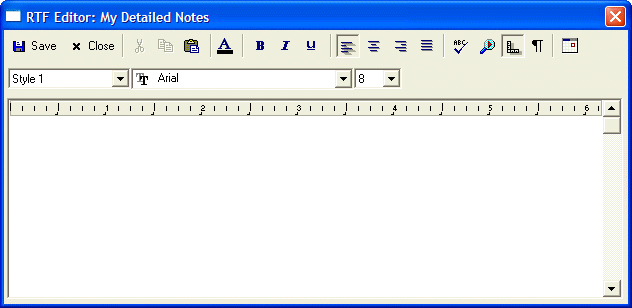

Using Memo and Rich Text Memo Fields
You can display up to 4,000 characters of a memo field in a browse.
By default, browse columns for long fields are set to a maximum width of 3 inchesand word wrap is turned on. Also, the row height is automatically adjusted so that the full content of long fields (up to 4K for memos) is visible.
You can edit memos in place in a browse.
You can also display Rich Text memos in a browse. You can access the RTF Editor directly from the browse.
When you open the pop-up memo or RTF Editor on a form, if a descriptive name has been defined for the field in Field Rules, the descriptive name is used in the title bar.

When editing RTF Memo fields, the Edit menu contains selections for Importing data from a RTF file into the current memo, and Exporting data from the RTF memo to a file. When importing, Alpha Anywhere gives you the option of overwriting existing data, or inserting the imported text at the current cursor location.
See Also